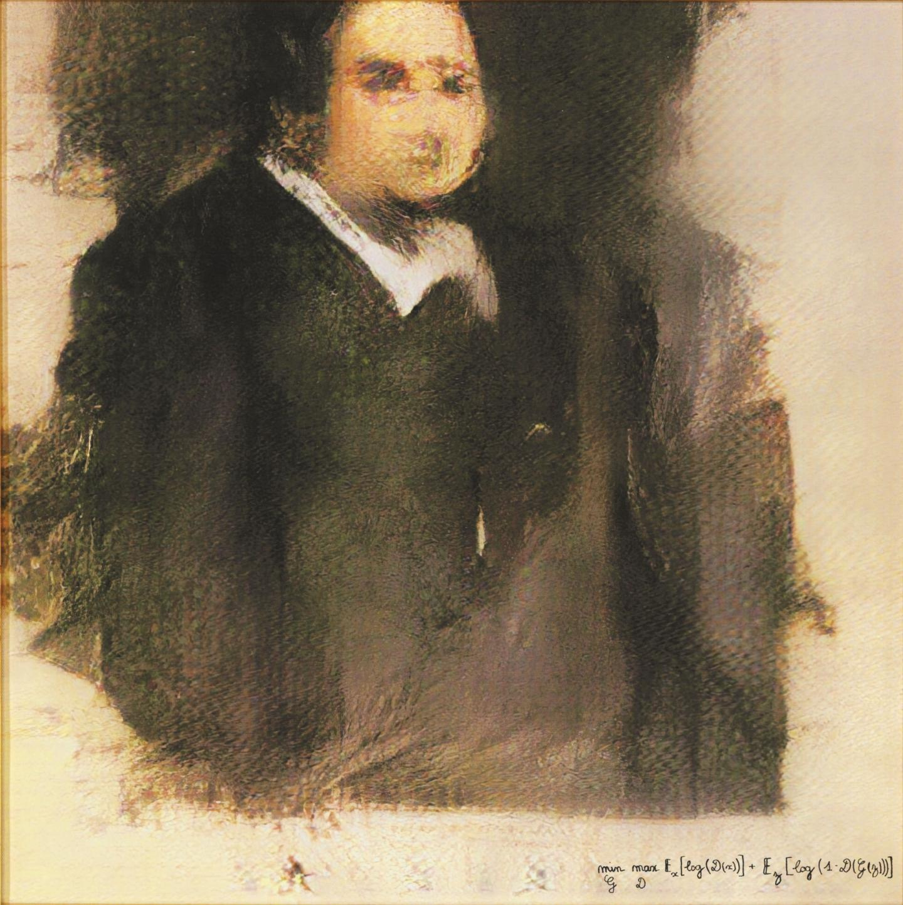
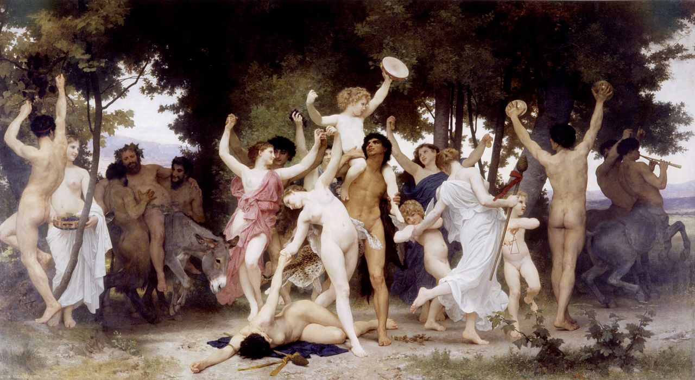
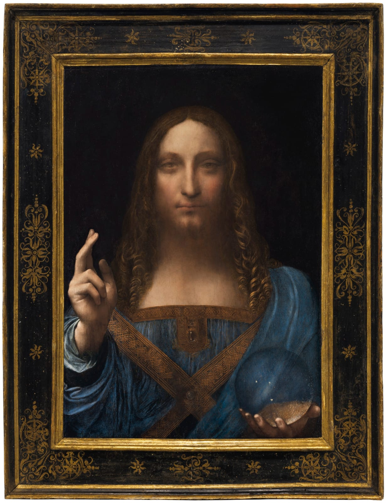

Theoretical works around the philosophical meaning or implications of arts and tech.

Edmond de Belamie (2018). AI Generated Art. Painting of a man. Retrieved from: here
Aesthetics of AI Art
chevron_left
Aesthetics of AI Art portare la religione all'assurdo, al futuro. Speculando sulla religione del futuro
Aesthetics of Art mostrare e ricreare l'arte con la tecnologia, scomparendo e ricomparendo
chevron_right

Vasily Kandinsky. Mit und Gegen. Retrieved from: here
Aesthetics of Art

William-Adolphe Bouguereau. The youth of Baccum. Retrieved from: here
Ancient and Romantic Literature of Degenerationism
expand_less
Ancient and Romantic Literature of Possession portare la religione all'assurdo, al futuro.
Branding of an Old Master mostrare e ricreare l'arte con la tecnologia, scomparendo e ricomparendo
chevron_right
Metaphysics of Black Box Algorithms mostrare e ricreare l'arte con la tecnologia, scomparendo e ricomparendo
expand_more

Leonardo Da Vinci (?). Salvator Mundi. Retrieved from here
Branding of an Old Master
Unknown. Black Box. Retrieved from: here
Metaphysics of Black Box Algorithms